The Transition from Parent to Parent-Caregiver
Upon discharge from Lurie Children's Hospital, parents of medically complex pediatric patients are required to assume the responsibility of organizing and administering precise doses of medication under strict scheduling.
To administer these doses, they use tools like ENFit syringes, which seal tightly to their children's gastric tubes (G-tubes) to deliver both food and liquid medicine. Through 6+ hours of interviews with parent-caregivers and medical professionals, we distilled three key pain points:
- The markings on the caregivers' syringes rub off after as few as ten uses, when they need to last three times that long.
- Caregivers are left to improvise organizational solutions for matching the right dose, syringe, bottle, and time of day.
- Non-medically trained parents frequently draw imprecise or inaccurate doses.
Mistakes caused by either of these two challenges could lead to unnecessary confusion at best, and a health crisis for the child at worst.
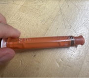
3 mL ENFit syringe with worn markings
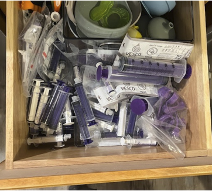
Actual parent-caregiver's kitchen "pharmacy" drawer
Simplifying the Dosing Process with the ENdose
The solution I designed and built with my team was the ENdose. The ENdose screws directly onto caregivers' medicine bottles, connects the syringe to the bottle using a liquid-tight port, and uses a mechanical limiter to physically stop movement of a syringe plunger at exactly the right height for a given dose of medicine.
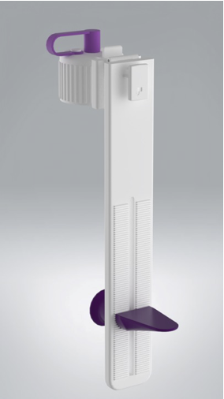
ENdose folded in storage position
(Render using SolidWorks Visualize)
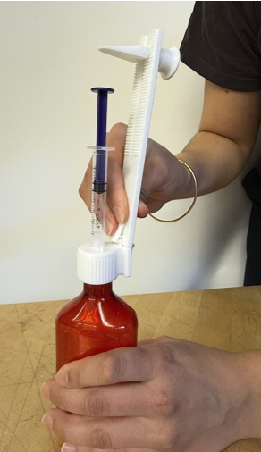
Usage of the ENdose
(PLA [Polylactic Acid] Prototype)
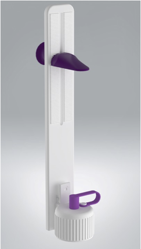
ENdose upright in usage position
(Render using SolidWorks Visualize)
Read more about the ENdose in our final report or final presentation.
Features
Push-and-Turn Cap
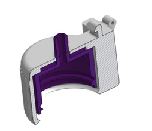
Parametric Sizing
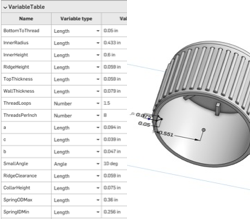
Flexible TPU (Thermoplastic Polyurethane) Plug
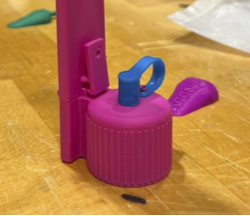
Enclosed Compression Spring
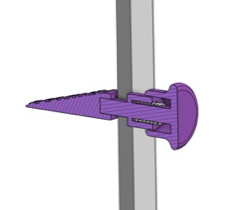
Hinge & Cantilever Latch
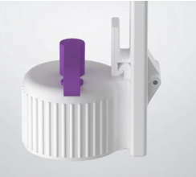
Color Choice for User Confidence
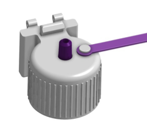
My Contributions
Complete Physical Product Design
Through dozens of rounds of rapid prototyping, I integrated user and expert feedback to physically sculpt the ENdose into a safe, user-friendly dosing tool.
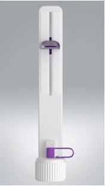
CAD & Rendering
To save unnecessary build phases, I used digital product visualization through tools like OnShape CAD and SolidWorks Visualize to evaluate ideas and present results.
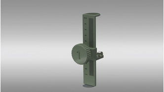
Tolerance Analysis
I conducted a root-mean-square tolerance analysis on the final assembly to gauge dosing precision across hypothetical injection-molded polycarbonate units.
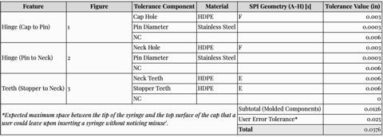
Prototype Fabrication & Assembly
I 3D printed components in PLA, PETG (polyethylene terephthalate glycol), and TPU, optimizing material and print orientation for durability and elastic deformation at the latch. Then, I used hot-plate welding and plastic adhesives to ensure consistent prototype functionality.
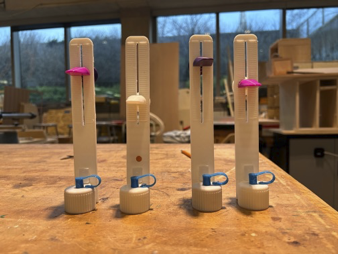
CMF (Color/Material/Finish) Selection & Product Design Language
I selected colors that were both functional (for example, by making it clear when a syringe isn't fully inserted) and aesthetic.
Intellectual Property Research
I delivered a comprehensive report on relevant patents to demonstrate novelty and opportunities for the client to protect the product.
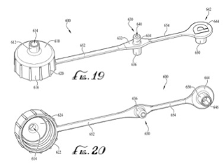
Failure Modes & Effects Analysis (FMEA)
Given the high-risk nature of our product, I produced a 35-point FMEA document to evaluate the safety and precision of dosing using the ENdose.
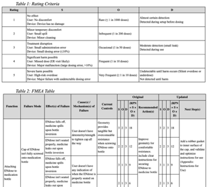
Finite Element Analysis (FEA)
To save time and cost when designing the cantilever latch mechanism, I first proved ideal deformation using an FEA in Abaqus software.
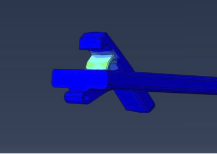
Bottle Finish Research & Parameter Definition
To design a 3D-printable bottle cap, I parsed industry standards for medicine bottle and cap geometries, including ASTM D-2911, and used them to define parameters in the final CAD model.
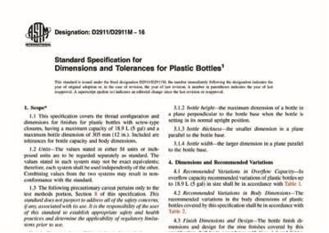
Color-Coding System
I developed a sticker-based color-coding system that allows the ENdose to be easily integrated into existing caregiver dosing routines.
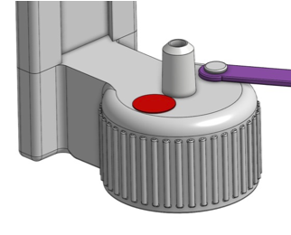